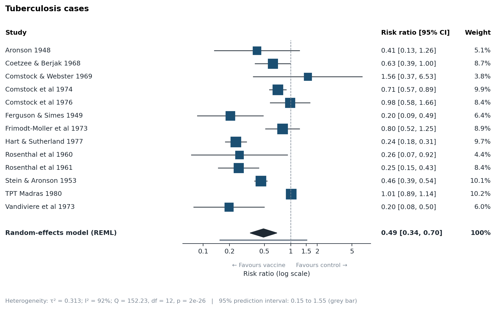
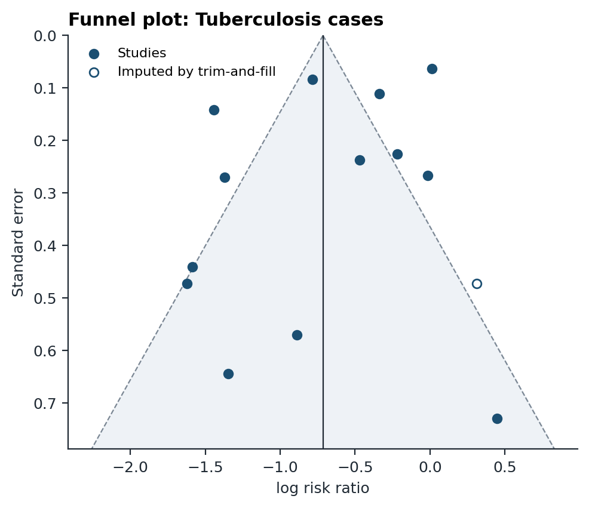

An AI agent extracts numbers from papers, but every number must carry the sentence it came from, and software checks that sentence against the paper. Validated code does every calculation. Starting from the raw trial data, it reproduces a published JAMA meta-analysis to the second decimal.
Risk ratio for tuberculosis with BCG vaccination, random-effects model, log scale. Every figure on this page is generated by metakit; nothing is typed in by hand.
A language model rarely invents a whole paper. It misreads one digit in a real sentence. That fake is 98.9% similar to the original, close enough to pass a normal text match. metakit checks the number against the paper's own copy of the sentence, not the extractor's.
The paper
In the athlete group (n = 212) the mean ST elevation in V2 was 0.21 mV (SD 0.08), compared with 0.12 mV (SD 0.05) in controls.
What an extractor submitted
In the athlete group (n = 212) the mean ST elevation in V2 was 0.31 mV (SD 0.08), compared with 0.12 mV (SD 0.05) in controls.
Two blind extractors also read every paper independently. Their outputs are compared field by field, and a person settles every disagreement. This follows the Cochrane standard of double data extraction.
Outcomes, effect measures and subgroups are fixed before any data is seen.
Open-access full texts, tables intact, from PubMed Central and Europe PMC. PDFs are converted by code, not the AI.
Every number is copied exactly, with its quote and table location.
Number in quote, quote in paper, plausibility, and standard errors reported as SDs.
Every disagreement between the two extractions is listed for a decision.
RoB 2, ROBINS-I, Newcastle-Ottawa or QUIPS, each judgement backed by a quote.
REML random effects with Knapp-Hartung, prediction intervals, subgroups, meta-regression, leave-one-out, Egger's test and trim-and-fill.
Methods and results prose, figures, PRISMA diagram and a GRADE summary with a reason for every downgrade.
The whole analysis is re-run in the field's reference software. Any difference fails loudly.
Largest difference from R's metafor at matched convergence settings: floating-point precision.
Automated tests, including invented numbers, fabricated quotes and doctored quotes the validator must catch.
Published meta-analyses reproduced end to end on every commit: BCG vaccine (JAMA 1994) and stroke-unit care (Stat Med 1999).


As a Claude Code plugin, then ask Claude to run a meta-analysis or type /metakit:meta-analysis:
claude plugin marketplace add armaan30542/meta-analysis-agent
claude plugin install metakit@metakitFrom the command line, with any agent (Codex reads AGENTS.md):
git clone https://github.com/armaan30542/meta-analysis-agent
cd meta-analysis-agent
./bin/metakit benchmark # reproduce the published results
./bin/metakit init my-review # start your ownRead how it works in plain language or the statistical methods and references.